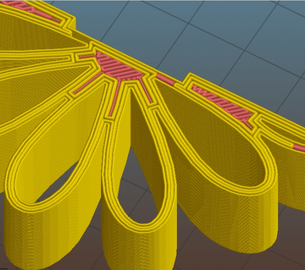

Release notes for 1.2.8 (2015-06-08)
More bugfixes. We want to make 1.2.x stable soon. Dear Slic3r community: thank you for your support, testing, reports and love!
For the whole list of changes and new features see the release notes for 1.2.0, 1.2.1, 1.2.2, 1.2.3, 1.2.5, 1.2.6 and 1.2.7.
New features:
- Associate a color to each filament preset for quicker browsing
- New experimental autospeed feature that chooses speeds automatically in order to keep volumetric speed and nozzle pressure constant; just set all speeds to 0 to enable it (#2810)
- New Max Volumetric Speed config option
- A new _[currentextruder] placeholder is now available (#2866)
Improvements:
- Nice menu item icons :o)
- When zooming in the 2D layers preview, zoom happens around mouse location
- When loading too large objects, fit them to build plate and warn user (#2853)
- Prompt user when trying to use 100% density with an infill pattern that does not support solid density
- Cmd+, opens Preferences (#2860)
- Prompt user when overwriting a G-code file during export (#2882)
Changes:
- If the –save command line option is called with no other config settings, the full default config is exported (#2110)
Bugfix:
- Fixed more situations where filenames and presets with non-ASCII characters were not handled correctly
- Fixed one minor situation when gap infill was missing (#2560)
- Fixed plater views not being refreshed after completing the config wizard
- Fixed crashes on Linux (#2858 #2613)
- Fixed concurrency issue when changing the number of extruders leading to slow GUI refresh or crashes (#2863)
- Fixed concave vertices detection not working correctly for holes (#2857)
- Fixed STL parser for handling more kinds of broken models (#2471 #2842)
- Added an explicit close button to the About window as a workaround for lack of title bar in wxMSW and wxGTK (#2688)
- Fixed bad handling of files with non-ASCII names during OctoPrint upload (#2827)
- Fixed wrong number of raft layers generated in some situations (#2723)
- Fixed the Repeat Last Quick Slice command being affected by plater changes (#2016)
- Fixed small gaps between infill and perimeters when solid infill extrusion width is much thinner than internal infill extrusion width (#2895)

